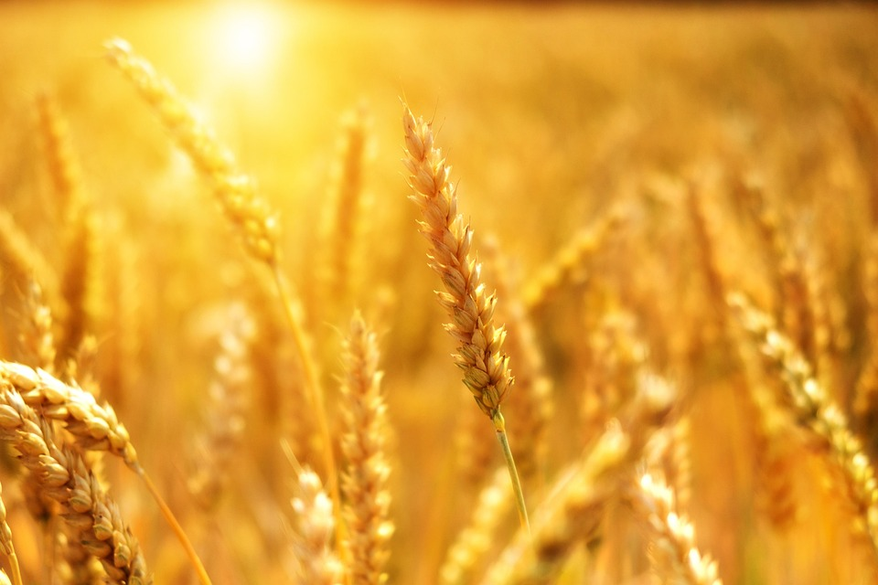
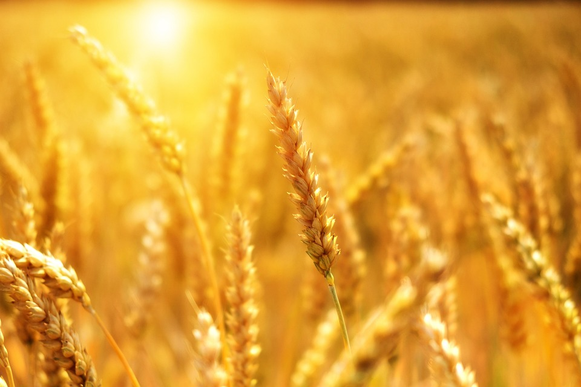

Sobre o Evento
Este evento celebra a união entre as tradições do campo e a modernidade da cidade. Venha se juntar a nós para uma festa cheia de cultura, música e gastronomia!
Galeria de Imagens
 Alimentação Saudável: Os alimentos frescos e locais são mais nutritivos e saborosos. Eles contribuem para uma dieta equilibrada, rica em vitaminas e minerais.
Economia Local: A produção agrícola gera empregos tanto nas áreas rurais quanto urbanas, estimulando a economia local. Isso inclui desde o trabalho no campo até o transporte, armazenamento e venda nas cidades.
Sustentabilidade: O consumo de produtos locais reduz a necessidade de transporte a longas distâncias, diminuindo a pegada de carbono e contribuindo para práticas mais sustentáveis.
Conexão entre Campo e Cidade: A relação entre produtores rurais e consumidores urbanos fortalece laços comunitários e promove a valorização dos produtos locais. Mercados de agricultores e feiras livres são exemplos de como essa interação pode ser benéfica.
Cultura e Tradição: Os alimentos do campo muitas vezes carregam histórias, tradições e saberes ancestrais que enriquecem a cultura alimentar das cidades.
Agradecimentos aos Produtores
É fundamental reconhecer o trabalho árduo dos produtores rurais que dedicam suas vidas ao cultivo da terra. Eles enfrentam desafios como condições climáticas adversas, pragas e as demandas do mercado, mas continuam a fornecer alimentos essenciais para todos nós. Agradecemos a esses heróis do campo por sua dedicação, resiliência e por nos oferecer o melhor da natureza em nossas mesas. Sem eles, nossas cidades não seriam as mesmas!
Alimentação Saudável: Os alimentos frescos e locais são mais nutritivos e saborosos. Eles contribuem para uma dieta equilibrada, rica em vitaminas e minerais.
Economia Local: A produção agrícola gera empregos tanto nas áreas rurais quanto urbanas, estimulando a economia local. Isso inclui desde o trabalho no campo até o transporte, armazenamento e venda nas cidades.
Sustentabilidade: O consumo de produtos locais reduz a necessidade de transporte a longas distâncias, diminuindo a pegada de carbono e contribuindo para práticas mais sustentáveis.
Conexão entre Campo e Cidade: A relação entre produtores rurais e consumidores urbanos fortalece laços comunitários e promove a valorização dos produtos locais. Mercados de agricultores e feiras livres são exemplos de como essa interação pode ser benéfica.
Cultura e Tradição: Os alimentos do campo muitas vezes carregam histórias, tradições e saberes ancestrais que enriquecem a cultura alimentar das cidades.
Agradecimentos aos Produtores
É fundamental reconhecer o trabalho árduo dos produtores rurais que dedicam suas vidas ao cultivo da terra. Eles enfrentam desafios como condições climáticas adversas, pragas e as demandas do mercado, mas continuam a fornecer alimentos essenciais para todos nós. Agradecemos a esses heróis do campo por sua dedicação, resiliência e por nos oferecer o melhor da natureza em nossas mesas. Sem eles, nossas cidades não seriam as mesmas!
Contato
Email: contato@festejandocampocidade.com
Telefone: (11) 1234-5678